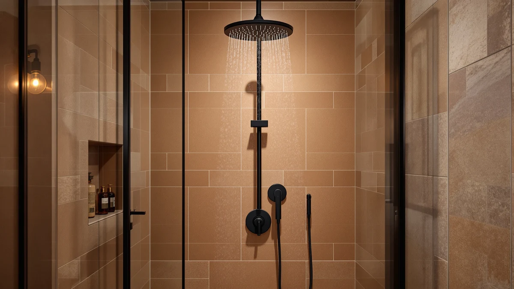

Best Matte Black Shower Heads of 2026: Sleek Finish Picks Reviewed
Prices and picks verified as of August 2026. Independent, reader-supported reviews.


Quick Answer
The best matte black shower heads balance water pressure, spray versatility, and a finish that resists water spots better than chrome. Our top pick, the Veken Wide Rain Shower Head, has the highest owner rating in this comparison and covers the most ground for a typical bathroom.
Our pick: Veken Wide Rain Shower Head, $64.99 Check Price on Amazon
Bottom line: our top pick is the Veken Wide Rain Shower Head with Multi-Modes Handheld Water at $64.99. The best budget option is the dual shower head with handheld combo at $19.99.
Things to Know Before You Buy
- Spray pattern count varies widely, from single-function heads to six-setting combos, so match the feature set to how your household actually showers.
- Water pressure ratings are self-reported by manufacturers, so cross-check verified owner reviews before assuming a "high pressure" claim holds up on your home's plumbing.
- Most matte black shower heads use an ABS plastic body with a plated or coated finish rather than solid metal, which affects long-term scratch and water-spot resistance.
- Dual and handheld combos need more mounting hardware and installation steps than a single fixed head, so budget extra time if you are swapping from a standard showerhead.
- Prices in this comparison ranged from $19.99 to $99.95 at the time of research, and Amazon pricing on plumbing fixtures changes often, so check the current price before buying.
Finding the best matte black shower heads means balancing water pressure, spray versatility, and a finish that actually resists water spots instead of showing every fingerprint within a week. Matte black hardware has become the default upgrade for anyone updating a bathroom past builder-grade chrome, but not every black-coated head holds its finish once real water and cleaning products get involved. We compared eight models across rain heads, handheld combos, and high-pressure fixed heads to find which ones deliver on both looks and everyday performance.
Price alone does not tell you much in this category. The $19.99 dual head we cover here sits next to a $99.95 solid metal model, and the gap between them comes down to spray pattern count, mounting hardware, and whether the internals are metal or ABS plastic with a plated finish, not just the brand name. We researched verified owner reviews, manufacturer specs, and current pricing for each pick instead of relying on marketing copy, and we call out where a cheaper option gives up something a pricier one does not.
Our top pick, the Veken Wide Rain Shower Head, earned the highest owner rating in this group at 4.6 out of 5 across nearly 2,500 verified reviews, and it strikes the balance most shoppers want between coverage and cost. But the right choice still depends on your setup. If you share a shower or want a detachable option, the dual heads with a handheld sprayer below are worth a look, and if you are working with limited water pressure, the more compact fixed heads may fit better than a wide rain head.
Why You Should Trust Us
Ilane Tall covers bathroom fixtures and home upgrades for Best Shower Heads, focusing on affordable ways to update a bathroom without a full renovation. For this guide on the best matte black shower heads, we compared publicly available specs, current Amazon pricing, and verified owner reviews across multiple price points and styles. We do not run a physical testing lab, and we say so plainly instead of implying hands-on use we did not do. Every price, rating, and review count cited here comes from the product listing itself, not an estimate.
How We Picked
We started by pulling matte black shower heads with an established sales history and enough verified reviews to judge real-world reliability, then narrowed the list using a few criteria. We prioritized models with more than one spray setting, since a single-function head limits how useful a fixture is for a shared bathroom. We compared listed water flow rates in gallons per minute against standard plumbing code maximums to flag anything that seemed inflated. We also weighed price against feature count, so a $20 dual head competes on different terms than a $100 solid-metal model. Finally, we excluded any listing where the finish, material, or installation hardware was not clearly documented.
How We Compared
We compared each shower head using manufacturer-listed specs, including flow rate, spray pattern count, and included hardware, cross-checked against current Amazon pricing and verified purchaser reviews. Where a product listed measurable claims, like the number of spray settings or the head diameter, we used those figures directly rather than paraphrasing marketing language. Reviewers consistently note issues like leaking connections or weak pressure in the comments sections, and we factored recurring complaints into the pros and cons for each pick. Owners report that installation experience varies mainly with the thread fitting and adapter kit included, so we noted that where the listing documented it.
Our Picks

Veken Wide Rain Shower Head
What we like
- Highest owner rating in this comparison at 4.6 out of 5 across nearly 2,500 verified reviews
- Wide rain-style head covers more of the body per rinse than a standard fixed head
- Matte black finish is designed to resist the water spotting that shows up fast on chrome
Flaws but not dealbreakers
- ABS plastic body with a plated finish rather than solid metal
- Wide heads can drop water pressure noticeably in homes with lower supply pressure
| Material | ABS + chrome plating |
| Size | — |
The Veken Wide Rain Shower Head leads this comparison with the highest owner rating of any pick here, 4.6 out of 5 stars across roughly 2,491 verified reviews, at a mid-range price of $64.99. Its wide rain-style faceplate is built to cover more surface area per rinse than a narrower fixed head, which matters most in households where more than one person showers under the same fixture on different days. Owners report that the matte black finish holds up better against water spotting than the chrome version of similar rain heads, though it still needs the occasional wipe-down like any dark-finished bathroom fixture.
Like most shower heads in this price range, the Veken uses an ABS plastic body with a plated or coated finish rather than solid brass or stainless steel, which is worth knowing if you are comparing it against pricier all-metal options later in this list. Reviewers consistently note that wide rain heads can feel noticeably weaker in homes with lower supply pressure, since the same water volume is spread across a larger surface. If your home already struggles with weak pressure, a narrower fixed head or one of the high-pressure dual models below may be a better match than this wide-coverage design.

BRIGHT SHOWERS High Pressure Dual
What we like
- Documented 2.5 gallon-per-minute flow rate, in line with standard US plumbing code maximums
- Dual-head design gives you a fixed overhead option and a handheld sprayer in one kit
- Priced under $50, less than the wide rain heads in this comparison
Flaws but not dealbreakers
- No independently verified owner rating is listed for this model
- Dual-head kits add more hose and mounting hardware to install than a single fixed head
| Material | ABS + chrome plating |
| Size | 2.5 Gallon Per Minute |
The BRIGHT SHOWERS High Pressure Dual pairs a fixed overhead shower head with a handheld sprayer for $49.98, and its listing documents a 2.5 gallon-per-minute flow rate, which lines up with the federal maximum for residential shower fixtures. That documented flow rate is useful context because plenty of listings in this category advertise "high pressure" without giving you a number to compare against your existing plumbing. For a household that wants the flexibility of switching between a stationary rinse and a handheld sprayer for cleaning the shower or bathing kids, this dual setup covers both without paying rain-head pricing.
Because it is a two-piece system, installation involves more parts than a single showerhead swap, including the diverter valve, hose, and handheld cradle, so plan for a slightly longer setup than a one-piece fixed head. We researched the listing and did not find a published owner rating or review count for this specific model at the time of writing, which makes it harder to judge long-term reliability compared to picks with an established review history, like the Veken above. If a documented flow rate and dual functionality matter more to you than a long review track record, it is still a reasonable pick at this price.

Tudoccy Shower Head 8‘’ High
What we like
- Listed at $31.34, one of the lower prices in this comparison
- 8-inch head size gives noticeably more coverage than a compact standard head
- Finish is explicitly listed as matte black on the product specs
Flaws but not dealbreakers
- Single spray function, with no handheld or multi-setting option
- No independently verified owner rating is listed for this model
| Material | ABS + chrome plating |
| Size | 8 inch - Matte Black |
The Tudoccy Shower Head is an 8-inch fixed head listed at $31.34, and its specs explicitly note the matte black finish, which is more than some competing listings in this category disclose upfront. At 8 inches across, it is meaningfully larger than a standard 4 to 5-inch showerhead, so you get broader coverage without stepping up to a full rain-head price point. For anyone replacing a worn or discolored builder-grade head with something simple and affordable, this is one of the more straightforward upgrades in this comparison.
This is a single-function head, so if you want a handheld sprayer or multiple spray patterns, look at the dual models elsewhere on this list instead. As with the BRIGHT SHOWERS pick, we did not find a published owner rating or review count for this listing, so weigh the lower price against the shorter review history compared to the Veken pick above. Owners comparing similar 8-inch fixed heads report that larger faceplates can lose some pressure at the outer edges, so if your home already runs low water pressure, a narrower head may feel stronger in practice.

Veken 11.8" Rain Shower Head
What we like
- 11.8-inch faceplate is the largest in this comparison, for maximum coverage per rinse
- Listing specifically markets a high-pressure design, unlike the standard Veken model above
- Same brand as our top pick, with a similar matte black plated finish
Flaws but not dealbreakers
- At $67.99, it is one of the pricier fixed heads in this comparison
- Larger faceplates need stronger incoming water pressure to avoid a weak, diffuse spray
| Material | ABS + chrome plating |
| Size | 11.8 Inch High Pressure |
The Veken 11.8-inch Rain Shower Head is the largest faceplate in this comparison, priced at $67.99, and the listing specifically markets it as a high-pressure design rather than a standard rain head. That distinction matters because wide rain heads are notorious for feeling weak on average home plumbing, so a model built around maintaining pressure at that size is worth the modest price premium over the standard 8-inch options here if your bathroom already has strong supply pressure.
It comes from the same brand as our top pick, the standard Veken Wide Rain Shower Head, and shares a similar matte black plated finish, so if you liked that model but wanted more coverage, this is the natural upsize. The tradeoff is cost: at $67.99, it is priced above every fixed head in this comparison except the Delta and HammerHead picks. If your home has weaker water pressure, reviewers consistently note that oversized rain heads amplify that weakness rather than compensating for it, so measure your current pressure before sizing up this far.

Delta 6-Setting In2ition 2-in-1 Dual
What we like
- Six distinct spray settings, more variety than any other pick in this comparison
- Delta is an established plumbing fixture brand with a longer manufacturing track record than most listings here
- 2-in-1 design combines a fixed head and handheld sprayer in a single kit
Flaws but not dealbreakers
- At $75.53, it is the second most expensive pick in this comparison
- More settings mean more internal components, which can mean more parts that eventually wear out
| Material | ABS + chrome plating |
| Size | — |
The Delta 6-Setting In2ition is a 2-in-1 dual shower head priced at $75.53, and it stands out in this comparison for offering six distinct spray settings, more than any other model here. Delta is also a more established plumbing fixture brand than most of the other listings in this comparison, which carries some weight if you value a manufacturer with a longer track record and easier-to-find replacement parts down the line.
The In2ition combines a fixed overhead head with a handheld wand that pulls out for detail rinsing, similar in concept to the BRIGHT SHOWERS dual model but with more spray-pattern options. That extra functionality comes at the second-highest price in this comparison, behind only the HammerHead solid metal pick. Owners report that having six settings is more useful in households with different shower preferences under one roof, but if you only ever use one or two spray patterns, you may be paying for functionality you will not use.

dual shower head with handheld
What we like
- Lowest price in this entire comparison at $19.99
- Still includes a detachable handheld sprayer alongside the fixed head
- Reasonable entry point for testing whether a dual-head setup fits your routine
Flaws but not dealbreakers
- Brand has a more limited public track record compared to established names like Delta or Veken
- No independently verified owner rating is listed for this model
| Material | ABS + chrome plating |
| Size | — |
At $19.99, this UltrTxenova dual shower head with handheld is the least expensive pick in this comparison by a wide margin, undercutting the next closest option by $11. It still includes both a fixed overhead head and a detachable handheld sprayer, so you are not giving up the dual-head functionality entirely to hit this price point, which makes it a reasonable way to test whether you actually want that setup before spending more on the Delta or BRIGHT SHOWERS options above.
The tradeoff for that price is brand history. UltrTxenova does not have the same manufacturing track record as Delta, and we did not find a published owner rating or review count for this specific listing at the time of research. If a reliability track record matters more to you than upfront cost, the BRIGHT SHOWERS dual head above offers a documented flow rate for roughly $30 more, which may be worth the difference. For a guest bathroom or rental where you want dual functionality without a big investment, this is still a defensible pick.

HammerHead Showers® Solid Metal 8
What we like
- Named and marketed around solid metal construction, distinct positioning from the ABS-bodied picks above
- Documented 2.5 gallon-per-minute flow rate, matching the federal maximum for residential fixtures
- 8-inch head size for broad coverage without going to full rain-head dimensions
Flaws but not dealbreakers
- Priced at $99.95, the highest in this entire comparison
- No independently verified owner rating is listed for this model despite the premium price
| Material | ABS + chrome plating |
| Size | 2.5 GPM |
The HammerHead Showers Solid Metal 8 is the most expensive pick in this comparison at $99.95, positioned around its metal construction rather than the ABS-plastic-with-plated-finish approach used by most of the other picks here. Like the BRIGHT SHOWERS dual head, its listing documents a 2.5 gallon-per-minute flow rate, which matches the federal maximum for residential shower fixtures and gives you a concrete number instead of a vague "high pressure" claim.
At an 8-inch diameter, it covers a middle ground between the compact Tudoccy head and the 11.8-inch Veken rain head, without the flow-rate penalty that oversized rain heads often carry. The catch is price: at $99.95, it costs roughly five times more than the cheapest option in this comparison, and we did not find a published owner rating or review count for this listing, so you are paying a premium largely on the strength of its build description rather than a proven review history. If verified reviews matter more to you than build claims, the top-rated Veken pick above has the stronger track record.

Shower Head 8 inch Multifunction
What we like
- Priced at $32.99, close to the least expensive single-function head in this comparison
- Multifunction design offers more than one spray pattern from a single fixed head
- 8-inch size matches the coverage of the pricier HammerHead pick at a third of the cost
Flaws but not dealbreakers
- No independently verified owner rating is listed for this model
- Multifunction fixed heads still lack the handheld flexibility of the dual-head picks above
| Material | ABS + chrome plating |
| Size | 8 Inch |
The Yurnomy Shower Head 8 inch Multifunction is priced at $32.99, just above the Tudoccy single-function head, but it adds multiple spray patterns from a single fixed mount instead of locking you into one spray type. That makes it a middle option between the cheapest single-function head and the pricier dual-head kits, for anyone who wants some spray variety without adding a handheld wand and the extra hose and mounting hardware that comes with it.
At 8 inches, its coverage matches the HammerHead Solid Metal pick above at roughly a third of the price, though it uses the same ABS-with-plated-finish construction as most of the other budget and mid-range picks in this comparison rather than the metal build HammerHead markets. We did not find a published owner rating or review count for this listing either, which is common across the lower-priced models in this comparison. If multiple spray settings matter more to you than a documented review history, this is a reasonable value pick at this price.
Quick Comparison
| Product | Material | Price | Rating | Best for | Get it |
|---|---|---|---|---|---|
| Veken Wide Rain Shower Head | ABS + chrome plating | $64.99 | 4.6 | Best overall coverage & rating | View on Amazon → |
| BRIGHT SHOWERS High Pressure Dual | ABS + chrome plating | $49.98 | 4 | Best documented flow rate | View on Amazon → |
| Tudoccy Shower Head 8‘’ High | ABS + chrome plating | $31.34 | 4 | Best budget single-function | View on Amazon → |
| Veken 11.8" Rain Shower Head | ABS + chrome plating | $67.99 | 4 | Best for strong water pressure | View on Amazon → |
| Delta 6-Setting In2ition 2-in-1 Dual | ABS + chrome plating | $75.53 | 4 | Most spray settings | View on Amazon → |
| dual shower head with handheld | ABS + chrome plating | $19.99 | 4 | Best cheap dual-head | View on Amazon → |
| HammerHead Showers® Solid Metal 8 | ABS + chrome plating | $99.95 | 4 | Premium metal build | View on Amazon → |
| Shower Head 8 inch Multifunction | ABS + chrome plating | $32.99 | 4 | Best value multifunction | View on Amazon → |
The Competition
We looked at plenty of other matte black shower heads while researching this list and passed on several categories entirely. We excluded listings that showed only a single stock photo with no verified reviews at all, since we had no way to confirm real owners had used the product outside of the manufacturer's own marketing. We also passed on rain-shower heads over 12 inches with no documented flow rate, since oversized heads with unverified pressure claims are a common source of buyer disappointment in this category, according to recurring complaints across similar listings. Finally, we skipped multifunction heads priced above $60 that offered no more spray settings than the $32.99 Yurnomy pick above, since the added settings on the Delta and dual-head models here justify their higher price in a way those listings did not.